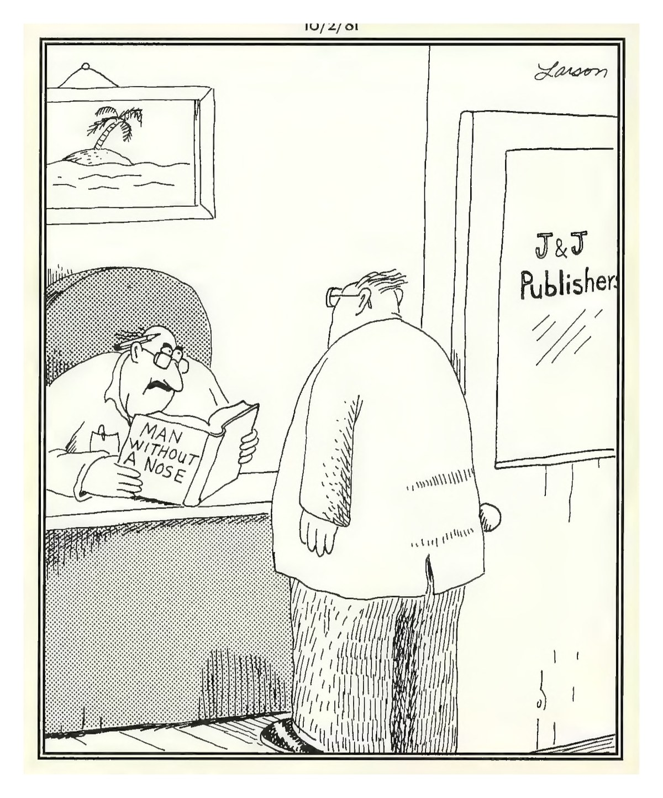

Your Daily Computer Brief
🔴 ALERT
Your phone rings. Caller ID says "Microsoft Support" or "Windows Security." The voice on the other end is professional, urgent — they've "detected suspicious activity" on your computer. They need remote access to "fix it." If you say yes, they'll install software that lets them steal your files, drain your bank accounts, or lock you out entirely. Here's the truth: Microsoft, Apple, and Google **never** call you out of the blue. They don't monitor your computer for viruses. They don't need remote access to "check" anything. That caller is a criminal running a script. What to do: Hang up. Immediately. Don't press 1, don't argue, don't give them a piece of your mind. Just hang up. If you're worried about your computer, call someone you trust — or bring it to the shop. Why it matters: Tech support phone scams cost Americans over $500 million last year. The average victim loses $400–$600. Some lose everything. The phone call is the hook — remote access is the knife. Source: FTC.gov "How To Spot, Avoid, and Report Tech Support Scams" — updated 2026; Microsoft Support "Avoid and report Microsoft technical support scams" — 2026
Today in Tech
- Microsoft's July Patch Tuesday fixed a record 570 security flaws in Windows 11, including three zero-days already exploited in attacks. Open Settings → Windows Update → Check for updates. Let it install and restart. (Source: Windows Central, BleepingComputer — July 2026)
- Nvidia opened its first U.S. AI supercomputer manufacturing plant in Fort Worth, Texas, with Wistron assembling Blackwell-powered systems. A second plant is coming to Houston with Foxconn. Could mean better GPU supply down the line. (Source: NVIDIA Blog, Dallas Innovates — July 2026)
- Florida awarded nearly $223 million to expand rural broadband across the Panhandle and North Florida — including areas around Lake City. The state's Broadband Opportunity Program is funding fiber builds to underserved communities. (Source: FL Gov Press Office — 2024; Florida Office of Broadband — 2026)
Daily Tip
Hit the Windows key (bottom-left corner) and just start typing the file name — or even a word you remember from inside it. Windows Search checks file names, contents, and folders all at once. No need to click through endless folders. On Mac: press Command + Space and type. Works every time. Saved me hours last week when a customer "lost" their tax return PDF (it was in Downloads, not Documents).
